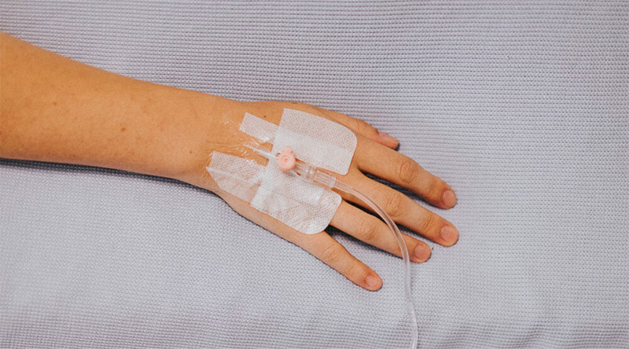
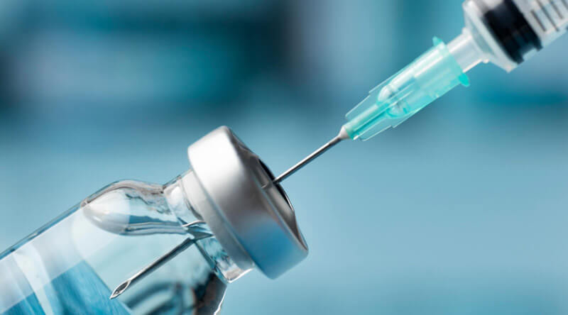
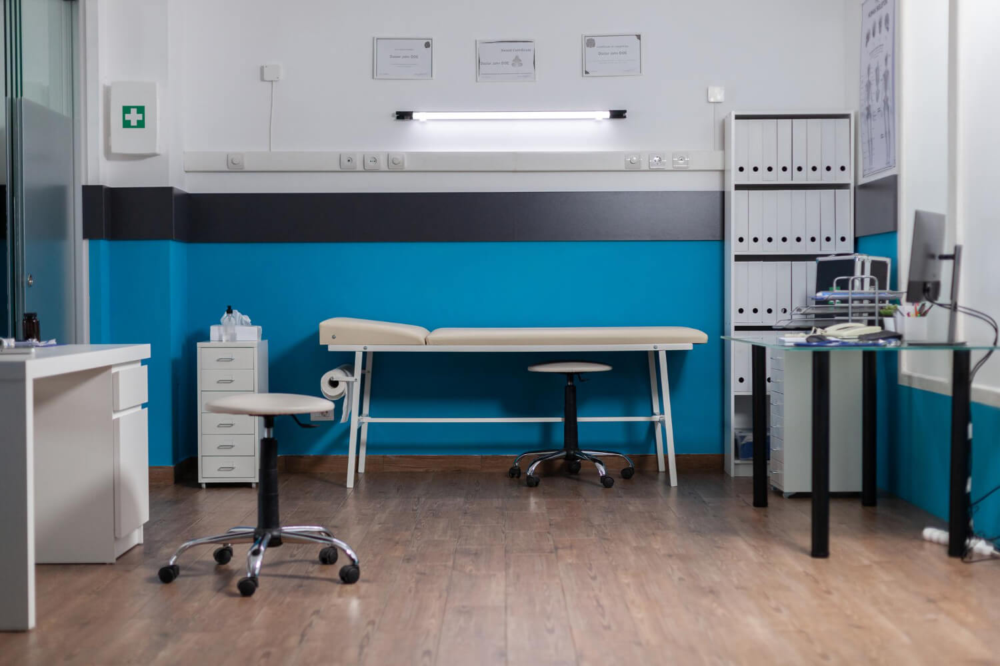
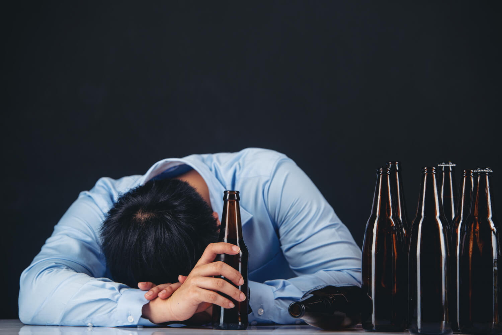
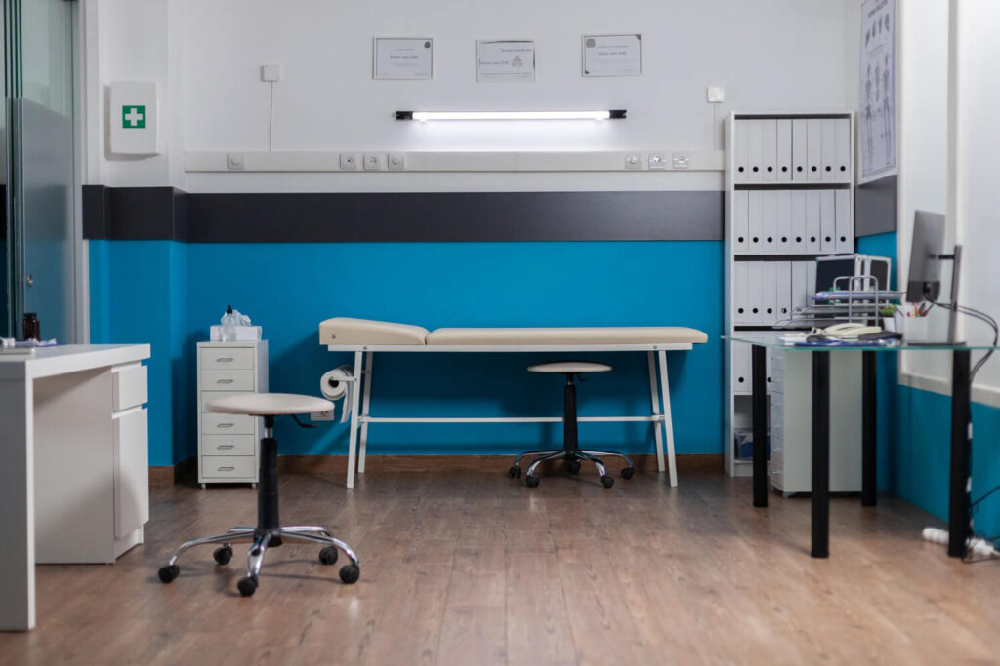

Работаем круглосуточно
Наркологическая
клиника в Пензе
Помощь при алкогольной и
наркотической зависимости
на дом
в течение часа
лечение
Помогаем спокойно
и по делу
В сложный момент важно не искать объяснений в одиночку. Специалист выслушает, оценит ситуацию и подскажет безопасный следующий шаг.
Круглосуточная помощь
Выезд врача в течение часа.
Бесплатная консультация
Ответим на любые вопросы.
Работаем официально
Все препараты сертифицированы.
Гарантия результата
Повторное лечение бесплатно при соблюдении рекомендаций.
Поддержка после лечения
Бесплатные консультации в течение года.
Выберем подходящий формат
Не нужно заранее знать, какая услуга нужна. Опишите ситуацию — специалист поможет подобрать безопасное решение.

Детоксикация (очищение организма)
При выраженной интоксикации, похмелье или ухудшении самочувствия.
от 3 000 руб.
Подробнее об услуге
- Капельницы для снятия интоксикации
- Восстановление водно-солевого баланса
- Устранение абстинентного синдрома («ломки»)
- Вывод токсинов после длительного употребления

Кодирование (на дому)
Подбираем метод после консультации и оценки противопоказаний.
от 5 000 руб.
Подробнее об услуге
- Медикаментозное (уколы, подшивка, таблетки)
- Психотерапевтическое (гипноз, метод Довженко)
- Аппаратное (лазерная и электроимпульсная терапия)
- Подбор метода с учётом индивидуальных особенностей
Вывод из запоя (на дому)
Срочная помощь на дому при длительном употреблении алкоголя.
от 3 300 руб.
Подробнее об услуге
- Срочный выезд нарколога на дом
- Стационарное лечение под наблюдением врачей
- Купирование осложнений (судороги, давление, бессонница)
Реабилитация зависимых
Для устойчивого восстановления и возвращения к полноценной жизни.
от 30 000 руб./мес.
Подробнее об услуге
- Амбулаторные и стационарные программы
- Групповая и индивидуальная психотерапия
- Социальная адаптация и помощь в трудоустройстве
Как проходит обращение
01
Расскажите, что случилось
Специалист бережно выслушает и задаст несколько важных вопросов.
02
Получите рекомендации
Объясним варианты помощи и сориентируем по стоимости.
03
Согласуем помощь
Время и формат подбираем под ситуацию.
04
Останемся рядом
После лечения дадим рекомендации и будем доступны для вопросов.
Цены на основные услуги
Выезд врача-нарколога на дом1 500 руб.
Есть возможность дополнительной платной консультации на месте.
Стационарное лечениеот 5 000 руб./сутки
Проживание, питание, вся необходимая терапия.
Капельница от алкоголя (стандарт/усиленная)3 000 руб. / 5 500 руб.
Капельница от похмелья, после запоя, для очищения и восстановления организма.
Кодирование от алкоголя на год (укол/вшивание/гипноз)5 000 руб. / 10 000 руб. / 12 000 руб.
Капельница от наркотиков (снятие ломки/очищающая терапия)5 300 руб. / от 6 600 руб.
Может потребоваться не одна процедура.
Блокировка наркотиков (Анти-Опиум)7 350 руб.
Реабилитация (Стандарт / VIP)от 30 000 руб.
Стандарт30 000 руб.
- Питание: 4 раза в день
- Проживание: палата на 2–3 человека
- Поддержка: общая и индивидуальная работа
Баня/спорт-зал, мотивация на лечение и программа социальной адаптации.
VIP50 000 руб.
- Питание: 5 раз в день
- Проживание: палата на 1–2 человека
- Поддержка: индивидуальная работа
Спорт-зал, баня, бассейн, мотивация на лечение и социальная адаптация.
Точную стоимость врач объясняет до начала помощи. Цена согласовывается заранее.
Профессиональная помощь, в которой есть человечность
«Линия Помощи» работает с 2010 года. Мы объединили медицинскую экспертизу и бережный подход, чтобы лечение было простым и уважительным к человеку. Многие пациенты не просто вернулись к нормальной жизни, но и смогли восстановить семьи, карьеру и социальные связи.
15+лет помогаем пациентам и их близким
5 000+пациентов получили помощь
24/7на связи без выходных
Специалистыс опытом лечения зависимостей

Специалисты, которым можно доверять
Каждый специалист работает по медицинским протоколам и умеет говорить о сложном спокойно и без давления.
Врач-нарколог
Оценивает состояние, подбирает терапию и сопровождает на всех этапах помощи.

Психолог-консультант
Помогает пациенту и близким понять ситуацию и выстроить путь к устойчивому восстановлению.

Координатор помощи
Остаётся на связи, помогает организовать выезд и ответить на организационные вопросы.
Лицензированная медицинская помощь.
Документы и сведения о специалистах можно уточнить во время консультации.
Истории людей, которым мы помогли
★★★★★
«Позвонили ночью, врач приехал быстро. Всё объяснил простыми словами, без осуждения.»Елена, отзыв о выезде на дом
★★★★★
«В первом разговоре стало ясно, что нам готовы помочь. Стоимость назвали заранее.»Александр, отзыв о консультации
★★★★★
«Это был не просто один визит, а настоящий путь к нормальной жизни.»Марина, отзыв близкого пациента
Частые вопросы
Как уговорить близкого на лечение?
Рекомендуем начать с мотивационной беседы или вызвать врача для интервенции.
Больно ли делать кодировку?
Нет, используются современные безболезненные методы.
Можно ли лечиться анонимно?
Да, мы не передаём данные в государственные учреждения.
Что делать при срыве после кодировки?
Немедленно связаться с нами для коррекции лечения.
Расскажите, что произошло
Специалист выслушает вас, объяснит возможные варианты помощи и подскажет, с чего начать.
Позвонить сейчас